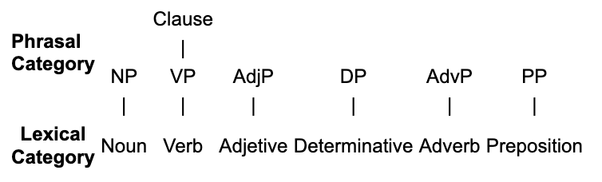

I'd like to begin by reiterating the point I made in my garden video: there's no one-to-one relationship between categories and functions. If there were, then we would have a much easier time defining the categories. For instance, if adjectives only functioned as modifiers of nouns, and nothing else modified nouns, then we could simply define an adjective as any word that modifies a noun, and we wouldn't have to bother with the stuff about very and become and -est endings, etc. This is also the point that was being made in the soup sketch: no single criterion will define a category. Unfortunately, this is more or less what traditional English school grammars always tried to do. They say a noun is a person, place, or thing, period. Consider the following example:
And they say that an adjective is any word that modifies a noun, as in this example:
But then you get cases like the Trudeau government, in which Trudeau is a person but the word is modifying the noun government. Or consider the example given above: she is a high school senior, in which high school is a place (or a thing), but it's modifying the noun senior. Neither Trudeau nor high school are actually adjectives. Check the properties yourself if you doubt this.
Traditional grammar tries to disguise the confusion with statements like "it's a noun functioning as an adjective," but that's like saying a pet rabbit is "a rabbit functioning as a dog". This is clearly nonsense. Rabbits and dogs are categories, not functions. Pets, beasts of burden, apex predators, guards, food stock, studs: these are all functions that animals perform, but no animal "functions as a dog" and no noun "functions as an adjective."
Adjective phrases have multiple functions, and other categories can modify nouns. And this is not limited to adjective phrases. Almost all categories perform multiple functions, and almost all functions can be performed by more than one category.
Make a list of other noun–noun combinations (e.g., soccer ball, faculty office), where the first is modifying the second, and then check the following examples.
We consider two main kinds of categories: lexical categories and phrasal categories. These categories can often be identified out of context. For instance, if you see the word happy, you can categorize it as an Adj. You can look it up in a dictionary, and it will say "adjective". There is no need for any more context. In some cases, the category will be ambiguous, as we saw with verbs/nouns like run, jump, and walk. It's not the case that each of these words belong to two categories; the verb walk and the noun walk are different words. It's simply the case that we may not have enough information to say which of the two words we're looking at. It is clear, however, that walk is not a adjective, adverb, preposition, or anything other than a noun or a verb.
Functions, on the other hand, are relational. We cannot look up a word in a dictionary and find out if it's a modifier, a subject, a head, or a dependent. These function can only be determined in a context by seeing how the word relates to the words around it.
Lexical categories contain individual words. Usually, in English, these are set off by spaces in writing, although there are some lexical items that contain an internal space (e.g., each other). So far, we have considered NOUN, VERB, and ADJECTIVE. The other lexical categories we will look at in this course are DETERMINATIVE, PREPOSITION, and ADVERB. Note that is not the full list of lexical categories.
Each of the lexical categories mentioned has a related phrasal category. For nouns, there are NOUN PHRASES (or NPs), for verbs there are VPs, for Adjectives, there are AdjPs, etc. There's one additional phrasal category, CLAUSE, which is headed by a VP as we saw before.
The usual meaning of phrase is "a group of words that have a particular meaning when used together," but here we also include one-word phrases. So go to school is a VP, but so is go when it occurs all on its own. We can have a long NP such as all the very interesting people who I met yesterday, but we can also have single-word NPs such as they or water.

Functions are broadly split into HEAD and DEPENDENT. There is only one kind of head, but dependents are subdivided into SUBJECT, MODIFIER, DETERMINER and COMPLEMENT. There is also a special kind of complement called OBJECT. There are some other functions, but these are the ones we will be studying in this course.
Once again, the following explanations will include terms that you may not yet be familiar with. Because this is a system, this is necessary. The terms will be explained soon, at which point, you may wish to review these definitions.
The following video is a helpful overview of morphosyntax. I don't agree with all of it (e.g., the employee hired the employer seem perfectly grammatical to me), but it's worth a watch if you're interested. You can skip it if you're not.